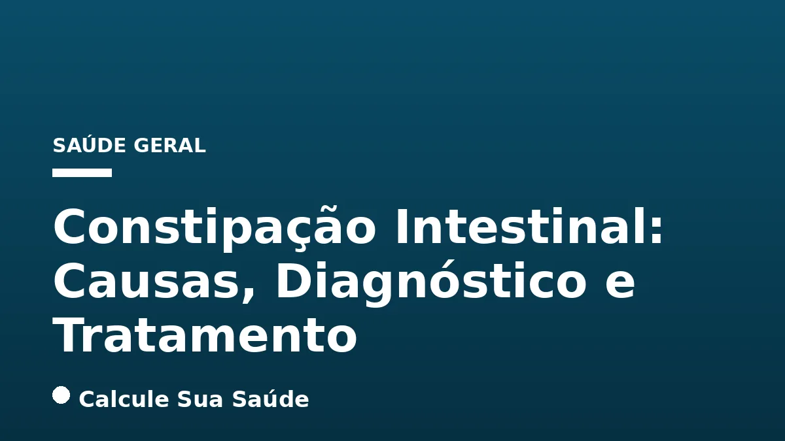

Aviso médico importante
Este conteúdo é educativo e informativo e não substitui a consulta, o diagnóstico ou o tratamento de um profissional de saúde. Em caso de sintomas, procure orientação médica.
Índice do Artigo
- 1. O Que É Constipação Intestinal? Definição e Impacto na Qualidade de Vida
- 2. Critérios de Roma IV: Padronizando o Diagnóstico da Constipação Funcional
- 3. Classificação Fisiopatológica da Constipação Crônica
- 4. Causas Comuns e Fatores de Risco Modificáveis
- 5. Constipação Secundária: Condições Médicas e Medicamentos
- 6. Fatores Demográficos e Sinais de Alerta para Procurar Ajuda Médica
- 7. O Processo Diagnóstico: Da Anamnese aos Exames Complementares
- 8. Prevenção e Tratamento Não-Medicamentoso: A Primeira Linha de Ação
- 9. Abordagens Medicamentosas: Quando e Como Utilizar Laxantes e Outros Fármacos
- 10. Evidências Científicas e Nível de Recomendação para o Tratamento
- 11. Mitos e Verdades Sobre a Constipação Intestinal
- 12. Epidemiologia da Constipação no Brasil
- 13. Conclusão: A Importância da Abordagem Individualizada e do Acompanhamento Médico
- 14. Perguntas frequentes
A constipação intestinal, popularmente conhecida como “intestino preso” ou “prisão de ventre”, representa um dos sintomas gastrointestinais mais prevalentes, afetando uma parcela significativa da população global. Longe de ser uma doença isolada, a constipação é, na verdade, uma manifestação de diversas condições subjacentes, hábitos de vida ou uso de medicamentos, caracterizada por evacuações difíceis, infrequentes ou incompletas.
Compreender a constipação vai além da simples frequência das evacuações. Envolve a análise da consistência das fezes, a necessidade de esforço excessivo, a sensação de evacuação incompleta e outros desconfortos que impactam diretamente a qualidade de vida. Este artigo, fundamentado em evidências científicas e diretrizes clínicas, visa desmistificar a constipação, explorando suas definições, causas, métodos diagnósticos e as abordagens terapêuticas mais eficazes disponíveis.
No portal Calcule Sua Saúde, nosso compromisso é fornecer informações precisas e aprofundadas sobre temas de saúde, capacitando nossos leitores a tomar decisões informadas. Abordaremos desde as modificações no estilo de vida, consideradas a primeira linha de tratamento, até as opções medicamentosas e terapias mais específicas, sempre com a ressalva de que o manejo deve ser individualizado e orientado por um profissional de saúde.
Em resumo
- A constipação é definida por evacuações infrequentes (menos de 3/semana), fezes duras, esforço excessivo ou sensação de evacuação incompleta, conforme os Critérios de Roma IV.
- Causas variam de hábitos de vida (dieta pobre em fibras, baixa hidratação, sedentarismo) a condições médicas e uso de medicamentos.
- O diagnóstico é clínico, mas exames complementares podem ser necessários para investigar causas secundárias ou casos refratários.
- A primeira linha de tratamento envolve medidas não-medicamentosas: aumento de fibras (especialmente psyllium), hidratação, atividade física e reeducação dos hábitos evacuatórios.
- Laxantes osmóticos e formadores de bolo fecal são opções seguras, enquanto laxantes estimulantes devem ser usados com cautela e sob orientação médica.
- Sinais de alerta como sangramento retal, perda de peso não intencional ou início dos sintomas após os 50 anos exigem avaliação médica imediata.
1. O Que É Constipação Intestinal? Definição e Impacto na Qualidade de Vida
A constipação intestinal é um sintoma gastrointestinal comum, caracterizado por evacuações difíceis, infrequentes ou incompletas. Embora o ritmo de evacuações possa variar amplamente entre os indivíduos – de uma a três vezes por dia a duas a três vezes por semana – a constipação é geralmente definida por menos de três evacuações por semana, acompanhadas de outros sintomas incômodos.
Não se trata de uma doença em si, mas sim de uma manifestação que pode ser aguda, quando surge subitamente devido a mudanças na rotina ou uso de medicamentos, ou crônica, quando os sintomas persistem por pelo menos três meses, com início há seis meses ou mais. A constipação crônica pode impactar significativamente a qualidade de vida, causando desconforto físico e, por vezes, psicológico.
Os sintomas associados à constipação incluem fezes endurecidas ou ressecadas, esforço excessivo durante a defecação, sensação de evacuação incompleta ou de bloqueio anorretal, e, em alguns casos, a necessidade de manobras manuais para auxiliar a eliminação das fezes. Compreender esses aspectos é o primeiro passo para buscar o tratamento adequado e melhorar a saúde intestinal.
2. Critérios de Roma IV: Padronizando o Diagnóstico da Constipação Funcional
Para padronizar o diagnóstico de distúrbios gastrointestinais funcionais, incluindo a constipação funcional, especialistas internacionais desenvolveram os Critérios de Roma IV. Este consenso é fundamental para a pesquisa e a prática clínica, garantindo uma abordagem consistente e baseada em evidências.
Para o diagnóstico de constipação funcional em adultos, dois ou mais dos seguintes critérios devem estar presentes em pelo menos 25% das evacuações nos últimos três meses, com início dos sintomas há pelo menos seis meses:
- Esforço excessivo durante a defecação.
- Fezes endurecidas ou fragmentadas (tipos 1 ou 2 da Escala de Bristol).
- Sensação de evacuação incompleta.
- Sensação de obstrução ou bloqueio anorretal.
- Manobras manuais para facilitar a evacuação (como uso dos dedos ou pressão no assoalho pélvico).
- Menos de três evacuações espontâneas por semana.
A aplicação rigorosa desses critérios permite diferenciar a constipação funcional de outras condições e orientar o tratamento de forma mais precisa. É importante ressaltar que a presença desses sintomas deve ser avaliada por um profissional de saúde.
3. Classificação Fisiopatológica da Constipação Crônica
A constipação crônica pode ser subdividida com base em sua fisiopatologia, o que auxilia na compreensão dos mecanismos envolvidos e na escolha do tratamento mais adequado. As principais categorias são:
Constipação de Trânsito Normal (Funcional)
Esta é a forma mais comum de constipação. Nela, o tempo de trânsito colônico (o tempo que leva para as fezes se moverem através do cólon) é normal. No entanto, o paciente relata sintomas de constipação, como esforço para evacuar e fezes duras. Acredita-se que fatores como a percepção da dor, a sensibilidade retal e a coordenação da defecação possam estar envolvidos.
Constipação de Trânsito Lento
Mais frequente em mulheres jovens, esta condição é caracterizada por uma demora significativa no esvaziamento do cólon. Há uma redução das contrações peristálticas, que são os movimentos musculares que impulsionam as fezes. Isso resulta em um acúmulo de fezes no cólon, que se tornam mais secas e difíceis de eliminar.
Doenças do Ato Evacuatório (Disquezia ou Dissinergia do Assoalho Pélvico)
Nesses casos, a dificuldade em defecar não está relacionada ao trânsito das fezes pelo cólon, mas sim à falta de coordenação dos músculos do assoalho pélvico e dos esfíncteres anais durante o ato evacuatório. Em vez de relaxarem para permitir a passagem das fezes, esses músculos se contraem ou não relaxam adequadamente, criando uma obstrução funcional. O biofeedback é uma terapia eficaz para essa condição.
4. Causas Comuns e Fatores de Risco Modificáveis
As causas da constipação intestinal são multifatoriais, e muitas delas estão ligadas a hábitos de vida que podem ser modificados. Identificar e corrigir esses fatores é crucial para a prevenção e o tratamento.
Dieta Pobre em Fibras
Um dos fatores mais significativos é o baixo consumo de fibras alimentares. Frutas, vegetais, legumes e grãos integrais são ricos em fibras, que adicionam volume às fezes, as tornam mais macias e facilitam seu trânsito pelo intestino. A ausência dessas fibras pode levar a fezes pequenas, duras e difíceis de evacuar.
Baixa Ingestão de Líquidos
A hidratação adequada é essencial para a saúde intestinal. A água ajuda a amolecer as fezes e a facilitar sua passagem. A ingestão insuficiente de líquidos, especialmente quando há um aumento no consumo de fibras, pode piorar a constipação e até levar à impactação fecal.
Sedentarismo e Inatividade Física
A falta de atividade física regular pode contribuir para a constipação. O movimento do corpo estimula os músculos intestinais, auxiliando no peristaltismo e no trânsito das fezes. Pessoas com estilos de vida sedentários tendem a ter um trânsito intestinal mais lento.
Ignorar o Desejo de Evacuar
Postergando a ida ao banheiro quando se sente o desejo de evacuar, o corpo pode perder o reflexo natural de defecação. Com o tempo, isso pode levar ao endurecimento das fezes no reto, tornando a evacuação mais difícil e dolorosa.
Mudanças na Rotina e Abuso de Laxantes
Viagens, alterações na dieta, estresse ou mudanças nos horários podem desregular o funcionamento intestinal. Além disso, o uso excessivo e regular de laxantes, especialmente os estimulantes, pode levar à dependência e, paradoxalmente, piorar a constipação a longo prazo, pois o intestino se "acostuma" e perde sua capacidade natural de contração.
5. Constipação Secundária: Condições Médicas e Medicamentos
A constipação pode ser um sintoma de diversas condições médicas subjacentes ou um efeito colateral de certos medicamentos. Nesses casos, o tratamento da causa primária é fundamental para resolver a constipação.
Medicamentos
Muitos fármacos podem afetar a motilidade intestinal e causar constipação. Entre eles, destacam-se: opioides (analgésicos potentes), antiácidos contendo cálcio ou alumínio, anti-histamínicos, anti-inflamatórios não esteroidais (como ibuprofeno), alguns tipos de antidepressivos (tricíclicos), certos medicamentos para pressão arterial (betabloqueadores e bloqueadores dos canais de cálcio), anticonvulsivantes (como fenitoína), medicamentos antináuseas (como ondansetrona) e suplementos de ferro.
Condições Médicas
- Distúrbios Metabólicos e Endócrinos: Hipotireoidismo (tireoide hipoativa), diabetes mellitus, uremia (acúmulo de toxinas no sangue devido a problemas renais), hipercalcemia (níveis elevados de cálcio no sangue) e fibrose cística podem afetar a função intestinal.
- Distúrbios Neurológicos: Doenças que afetam o sistema nervoso, como esclerose múltipla, doença de Parkinson, mielomeningocele, espinha bífida e paralisia cerebral, podem comprometer os sinais nervosos que controlam os movimentos intestinais.
- Doenças do Trato Gastrointestinal: A Síndrome do Intestino Irritável (SII) com predomínio de constipação, doença diverticular, hemorroidas e fissuras anais (que causam dor e inibem a evacuação), câncer colorretal e a doença de Hirschsprung (uma condição congênita) são exemplos de patologias que podem levar à constipação.
- Gravidez: Alterações hormonais (aumento da progesterona) e a compressão uterina sobre o intestino são fatores comuns que contribuem para a constipação durante a gestação.
- Fatores Psicológicos: Estresse crônico, ansiedade e depressão podem influenciar a função intestinal através do eixo cérebro-intestino, alterando a motilidade e a sensibilidade.
6. Fatores Demográficos e Sinais de Alerta para Procurar Ajuda Médica
Além das causas e fatores de risco modificáveis, certos aspectos demográficos também podem influenciar a prevalência da constipação. É crucial estar atento aos sinais de alerta que indicam a necessidade de uma avaliação médica imediata.
Fatores Demográficos
Estudos epidemiológicos indicam que o sexo feminino tem maior predisposição à constipação, assim como a idade avançada, especialmente acima dos 50 anos. Fatores socioeconômicos, como baixo nível socioeconômico e baixa escolaridade, também são associados a uma maior prevalência, possivelmente devido a hábitos alimentares e acesso limitado à informação e saúde.
Sintomas Comuns da Constipação
- Menos de três evacuações por semana.
- Fezes duras, secas ou em pedaços (tipos 1 e 2 da Escala de Bristol).
- Esforço excessivo ou dor para evacuar.
- Sensação de evacuação incompleta.
- Sensação de bloqueio no reto.
- Necessidade de usar os dedos ou outras manobras para auxiliar a passagem das fezes.
- Dor abdominal, inchaço (empachamento) e flatulência.
Sinais de Alerta: Quando Procurar Ajuda Médica
Embora a constipação seja frequentemente benigna, certos sinais e sintomas podem indicar uma condição mais grave e exigem avaliação médica urgente. Não hesite em procurar um médico se você apresentar:
| Sinal de Alerta | Descrição |
|---|---|
| Sintomas persistentes | Constipação que dura mais de três semanas e não melhora com mudanças no estilo de vida. |
| Dificuldade em atividades diárias | A constipação é tão severa que interfere nas suas atividades habituais. |
| Sangramento retal ou sangue nas fezes | Presença de sangue vermelho vivo ou escuro nas fezes. |
| Fezes pretas | Pode indicar sangramento no trato gastrointestinal superior. |
| Mudanças incomuns nas fezes | Alterações persistentes na forma, calibre ou cor das fezes. |
| Dor abdominal que não cessa | Dor intensa ou que não alivia. |
| Perda de peso não intencional | Perda de peso significativa sem dieta ou esforço. |
| Início dos sintomas após os 50 anos | A constipação de início recente em pessoas mais velhas pode ser um sinal de alerta. |
| Histórico familiar de câncer colorretal | Aumenta o risco e a necessidade de investigação. |
Esses sinais podem indicar condições como câncer colorretal, doença inflamatória intestinal ou outras patologias que requerem diagnóstico e tratamento específicos.
7. O Processo Diagnóstico: Da Anamnese aos Exames Complementares
O diagnóstico da constipação intestinal é predominantemente clínico, iniciando-se com uma história detalhada do paciente (anamnese) e um exame físico completo. O médico investigará a frequência e consistência das fezes, a presença de esforço, a sensação de evacuação incompleta, o uso de laxantes, a dieta, o nível de atividade física e o uso de medicamentos.
Anamnese e Exame Físico
Durante a anamnese, o profissional de saúde fará perguntas específicas sobre os hábitos intestinais, histórico médico, doenças preexistentes e medicamentos em uso. O exame físico pode incluir a palpação abdominal para verificar distensão ou massas e um exame retal digital para avaliar o tônus do esfíncter anal e a presença de fezes no reto.
Critérios de Roma IV
Para casos de constipação crônica funcional, os Critérios de Roma IV são aplicados para padronizar o diagnóstico, conforme detalhado anteriormente. A presença de dois ou mais desses critérios, com a frequência e duração especificadas, sugere constipação funcional.
Exames Complementares
Em situações onde há suspeita de causas secundárias, sinais de alerta ou quando a constipação é refratária ao tratamento inicial, exames complementares podem ser solicitados:
- Exames de Sangue: Podem ser realizados para verificar condições como hipotireoidismo (avaliação dos hormônios tireoidianos) ou diabetes (glicemia), que podem causar constipação.
- Endoscopia (Colonoscopia ou Sigmoidoscopia): Permitem ao médico visualizar o interior do cólon e reto para descartar obstruções, pólipos, inflamações ou outras patologias.
- Exames de Imagem (Raio-X, Tomografia Computadorizada, Ressonância Magnética): Podem ser úteis para identificar bloqueios físicos, tumores ou outras anormalidades estruturais no trato gastrointestinal.
- Estudos de Movimento das Fezes (Tempo de Trânsito Colônico): Avaliam a velocidade com que as fezes se movem através do cólon, utilizando marcadores radiopacos que o paciente ingere. Ajuda a diferenciar a constipação de trânsito lento da constipação de trânsito normal.
- Manometria Anorretal e Defecografia: São exames especializados para diagnosticar disfunções do assoalho pélvico ou distúrbios do ato evacuatório (disquezia), avaliando a pressão nos esfíncteres anais e a coordenação muscular durante a defecação.
8. Prevenção e Tratamento Não-Medicamentoso: A Primeira Linha de Ação
A abordagem inicial e mais fundamental para a prevenção e o tratamento da constipação intestinal baseia-se em medidas não-medicamentosas. Essas estratégias são seguras, eficazes e devem ser implementadas antes de considerar o uso de medicamentos, sempre que possível.
Aumento da Ingestão de Fibras
A inclusão de fibras na dieta é fortemente recomendada como primeira linha de tratamento. Recomenda-se um consumo diário de 20 a 25 gramas de fibras. Isso pode ser alcançado através da dieta, priorizando frutas, vegetais, legumes, grãos integrais e sementes. Para aqueles que têm dificuldade em atingir essa meta apenas com a alimentação, suplementos de fibra podem ser indicados. O psyllium, uma fibra solúvel de alta viscosidade, é considerado a opção mais efetiva entre os suplementos, capaz de aumentar o volume das fezes e melhorar a hidratação. Alimentos como kiwi (duas a três unidades por dia por quatro semanas), pão de centeio e ameixa seca também mostraram resultados promissores em estudos.
Hidratação Adequada
Ingerir cerca de 2 litros (aproximadamente 10 copos) de água por dia é crucial. A água é essencial para que as fibras funcionem corretamente, amolecendo as fezes e facilitando sua passagem. A desidratação, especialmente em conjunto com uma dieta rica em fibras, pode piorar a constipação e levar à impactação fecal.
Atividade Física Regular
O exercício físico contribui positivamente para a função intestinal, estimulando o peristaltismo e o movimento das fezes através do cólon. Mesmo uma caminhada diária pode ser benéfica. A inatividade física é um fator de risco conhecido para a constipação.
Reeducação dos Hábitos de Evacuação
Estabelecer horários regulares para ir ao banheiro, preferencialmente após as refeições (quando o reflexo gastrocólico é mais ativo), e não ignorar o desejo de evacuar são hábitos importantes. Criar um ambiente tranquilo e ter tempo suficiente para a evacuação também pode ajudar.
Biofeedback
Para pacientes com disfunção do assoalho pélvico (disquezia), a terapia de biofeedback é uma abordagem eficaz. Ela atua na reeducação dos músculos envolvidos na evacuação, ajudando o paciente a aprender a relaxar os músculos do assoalho pélvico e o esfíncter anal durante a defecação, melhorando a coordenação e facilitando a passagem das fezes.
9. Abordagens Medicamentosas: Quando e Como Utilizar Laxantes e Outros Fármacos
Quando as medidas não-medicamentosas não são suficientes para aliviar a constipação, laxantes e outras medicações podem ser indicadas. É fundamental que o uso desses medicamentos seja feito sob orientação e acompanhamento médico, para garantir a segurança e a eficácia, evitando o uso inadequado e a dependência.
Laxantes Formadores de Bolo Fecal
Esses laxantes, como o psyllium e a metilcelulose, atuam aumentando o volume e a maciez das fezes. Eles absorvem água no intestino, formando um gel que estimula o movimento intestinal e facilita a evacuação. São considerados seguros para uso a longo prazo, desde que acompanhados de ingestão adequada de líquidos.
Laxantes Osmóticos
Os laxantes osmóticos, como a lactulose, o polietilenoglicol (PEG) e o hidróxido de magnésio (leite de magnésia), funcionam atraindo água para o intestino. Isso aumenta o conteúdo de água nas fezes, tornando-as mais macias e volumosas, o que facilita a evacuação. São geralmente bem tolerados e podem ser usados por períodos mais longos sob supervisão médica.
Laxantes Estimulantes
Laxantes como o bisacodil e a senna atuam estimulando diretamente as contrações dos músculos do intestino. Eles são eficazes para aliviar a constipação aguda, mas seu uso prolongado (geralmente por mais de quatro semanas) não é recomendado, pois pode levar à dependência intestinal e danos aos nervos do cólon. Devem ser utilizados com cautela e apenas sob orientação médica para períodos curtos.
Medicações Mais Específicas para Casos Refratários
Para pacientes com constipação crônica refratária que não respondem às abordagens convencionais, medicações mais específicas podem ser consideradas:
- Prucaloprida: Um agonista seletivo do receptor de serotonina 5-HT4, que aumenta a motilidade colônica.
- Linaclotida e Plecanatida: Agonistas do receptor de guanilato ciclase-C, que aumentam a secreção de cloreto e água no lúmen intestinal, acelerando o trânsito e amolecendo as fezes.
- Lubiprostona: Um ativador de canais de cloreto, que aumenta a secreção de fluidos no intestino, facilitando a passagem das fezes.
A escolha da medicação dependerá da avaliação médica, considerando a causa da constipação, a resposta a tratamentos anteriores e o perfil de segurança de cada fármaco.
Tratamento da Condição Subjacente
Se a constipação for secundária a outra doença (como hipotireoidismo ou diabetes), o tratamento dessa condição é essencial para resolver o problema intestinal. Nesses casos, a constipação pode melhorar significativamente uma vez que a doença primária esteja sob controle.
10. Evidências Científicas e Nível de Recomendação para o Tratamento
A medicina baseada em evidências é o pilar para as recomendações de tratamento da constipação intestinal. Diversos estudos e diretrizes clínicas oferecem insights sobre a eficácia das diferentes abordagens.
Fibras Alimentares
A inclusão de fibras na dieta é consistentemente e fortemente recomendada como a primeira linha de tratamento para a constipação. As fibras aumentam o volume das fezes e retêm água, tornando-as mais macias e fáceis de passar. Entre os suplementos de fibra, o psyllium é amplamente considerado a opção mais efetiva, embora algumas diretrizes ainda apontem a necessidade de mais estudos robustos para consolidar seu nível de evidência em todas as situações.
Hidratação e Atividade Física
A hidratação adequada é um componente crucial, especialmente quando se aumenta a ingestão de fibras, para evitar a piora da constipação e a impactação fecal. A atividade física regular, embora não haja um consenso sobre o tipo ou intensidade exata, é geralmente aceita como um fator positivo para a função intestinal, contribuindo para o peristaltismo.
Laxantes Osmóticos e Formadores de Bolo Fecal
Os laxantes osmóticos, como o polietilenoglicol (PEG) e a lactulose, possuem um bom nível de evidência para o tratamento da constipação crônica, sendo eficazes e seguros para uso a longo prazo na maioria dos pacientes. O óxido de magnésio também demonstrou melhorar a frequência das evacuações e os sintomas associados.
Laxantes Estimulantes
Embora eficazes, os laxantes estimulantes (bisacodil, senna) são geralmente recomendados para uso de curto prazo devido ao risco de dependência e efeitos adversos com o uso crônico. A evidência sugere que devem ser utilizados com cautela e sob estrita orientação médica.
Probióticos, Prebióticos e Simbióticos
Apesar do crescente interesse na microbiota intestinal, a literatura aponta para uma falta de consenso e a necessidade de mais estudos sobre a eficácia de cepas específicas de prebióticos, probióticos e simbióticos para o tratamento da constipação. Embora alguns estudos sugiram benefícios, as evidências ainda são consideradas fracas ou inconsistentes para uma recomendação generalizada.
Biofeedback
Para pacientes com disfunção do assoalho pélvico (disquezia), a terapia de biofeedback possui um forte respaldo de evidências como tratamento eficaz, auxiliando na reeducação dos músculos envolvidos na defecação.
11. Mitos e Verdades Sobre a Constipação Intestinal
Existem muitas crenças populares sobre a constipação intestinal que nem sempre correspondem à realidade científica. Desvendar esses mitos é fundamental para uma abordagem correta e eficaz do problema.
| Mito | O Que a Ciência Diz (Fato) |
|---|---|
| Só quem come mal tem prisão de ventre. | Embora uma dieta pobre em fibras seja um fator de risco significativo, a constipação é multifatorial e pode afetar indivíduos com hábitos alimentares saudáveis e estilo de vida ativo devido a outras causas (medicamentos, condições médicas, etc.). |
| Não existem fatores de risco para a prisão de ventre. | Existem diversos fatores de risco bem estabelecidos, como ser mulher, baixa ingestão de água, dieta pobre em fibras, sedentarismo, idade avançada, uso de certos medicamentos e condições médicas. |
| Condições hormonais não causam prisão de ventre. | Fato: Condições hormonais, como o hipotireoidismo (tireoide hipoativa) e as alterações hormonais da gravidez, podem causar constipação ao afetar a motilidade intestinal. |
| Evacuar menos de três vezes por semana é "normal do corpo". | A Mayo Clinic e outras diretrizes médicas definem constipação como menos de três evacuações por semana. Mais importante do que apenas a frequência é a observação de outros sintomas, como dificuldade, esforço e consistência das fezes. |
| Laxantes são a solução para todos os casos de constipação. | O uso de laxantes deve ser feito com cautela e sob orientação médica. As mudanças no estilo de vida (dieta, hidratação, exercícios) são a primeira linha de tratamento. O uso prolongado e indiscriminado de laxantes estimulantes pode ser prejudicial e levar à dependência. |
12. Epidemiologia da Constipação no Brasil
A constipação intestinal é um problema de saúde pública relevante no Brasil, com dados epidemiológicos que refletem sua alta prevalência, embora haja variações regionais e metodológicas nos estudos.
Prevalência no Brasil
A prevalência da constipação intestinal no Brasil varia de 14,5% a 38,4% da população. Essa ampla faixa pode ser atribuída a diferentes metodologias de pesquisa, definições de constipação e populações estudadas.
Um estudo epidemiológico de base populacional realizado em uma cidade brasileira encontrou uma prevalência de constipação autorreferida de 25,2% em adultos. Notavelmente, a prevalência foi significativamente maior em mulheres (37,2%) em comparação com homens (10,2%), um padrão observado globalmente.
Outra fonte indica que a constipação crônica afeta aproximadamente 25% da população brasileira, com 37% das mulheres e 10% dos homens sendo afetados. Esses números reforçam a disparidade de gênero na incidência da condição.
Lacunas nos Dados
Apesar desses dados, a literatura aponta que não existem dados publicados de prevalência na população geral que abranjam todas as regiões do Brasil de forma abrangente. Os estudos frequentemente são realizados em subgrupos específicos da população, como lactentes, adolescentes e mulheres na menopausa, o que pode não refletir a realidade de todo o país. A falta de dados nacionais unificados dificulta a formulação de políticas de saúde pública mais direcionadas para a prevenção e o manejo da constipação.
A alta prevalência da constipação no Brasil sublinha a importância de campanhas de educação em saúde e do acesso a informações baseadas em evidências para que a população possa identificar os sintomas e buscar o tratamento adequado.
13. Conclusão: A Importância da Abordagem Individualizada e do Acompanhamento Médico
A constipação intestinal é um sintoma complexo e multifacetado que exige uma abordagem cuidadosa e individualizada. Compreender suas causas, que podem variar de hábitos de vida a condições médicas subjacentes, é o primeiro passo para um tratamento eficaz.
As medidas não-medicamentosas, como o aumento da ingestão de fibras e líquidos, a prática regular de atividade física e a reeducação dos hábitos evacuatórios, constituem a primeira e mais importante linha de defesa. Para muitos, essas mudanças são suficientes para restaurar a regularidade intestinal e aliviar os sintomas.
Quando as modificações no estilo de vida não são suficientes, as opções medicamentosas, incluindo laxantes formadores de bolo fecal, osmóticos e, em casos específicos, estimulantes ou fármacos mais recentes, podem ser consideradas. No entanto, é crucial que qualquer tratamento medicamentoso seja prescrito e acompanhado por um profissional de saúde para evitar efeitos adversos e dependência.
É fundamental estar atento aos sinais de alerta que indicam a necessidade de uma avaliação médica imediata. A constipação, embora frequentemente benigna, pode ser um sintoma de condições mais sérias que exigem diagnóstico e intervenção precoces. No Calcule Sua Saúde, reforçamos que este conteúdo é educativo e não substitui a consulta com um médico ou especialista. A busca por orientação profissional é essencial para um diagnóstico preciso e um plano de tratamento adequado à sua saúde.
14. Perguntas frequentes
O que é considerado constipação intestinal?
A constipação é definida por menos de três evacuações por semana, fezes duras ou fragmentadas, esforço excessivo, sensação de evacuação incompleta ou de bloqueio anorretal, e a necessidade de manobras manuais para auxiliar a defecação. Esses critérios devem estar presentes em pelo menos 25% das evacuações nos últimos três meses, com início há seis meses ou mais, conforme os Critérios de Roma IV.
Quais são as principais causas da constipação?
As causas são variadas e podem incluir dieta pobre em fibras, baixa ingestão de líquidos, sedentarismo, ignorar o desejo de evacuar, mudanças na rotina, uso excessivo de laxantes, certos medicamentos (como opioides e antidepressivos) e condições médicas como hipotireoidismo, diabetes, Síndrome do Intestino Irritável e doenças neurológicas.
Quando devo procurar um médico por causa da constipação?
Você deve procurar um médico se a constipação durar mais de três semanas, causar dificuldade nas atividades diárias, se houver sangramento retal, fezes pretas, mudanças incomuns na forma ou cor das fezes, dor abdominal persistente, perda de peso não intencional, ou se os sintomas começarem após os 50 anos ou houver histórico familiar de câncer colorretal.
Quais são os tratamentos não-medicamentosos mais eficazes?
Os tratamentos não-medicamentosos mais eficazes incluem aumentar a ingestão de fibras (20-25g/dia, com destaque para o psyllium), beber cerca de 2 litros de água por dia, praticar atividade física regularmente, e reeducar os hábitos de evacuação, estabelecendo horários e não ignorando o reflexo evacuatório. Para disfunções do assoalho pélvico, o biofeedback é uma terapia eficaz.
Laxantes são seguros para uso a longo prazo?
Laxantes formadores de bolo fecal (como psyllium) e osmóticos (como lactulose e polietilenoglicol) são geralmente considerados seguros para uso a longo prazo sob orientação médica. No entanto, laxantes estimulantes (como bisacodil e senna) devem ser usados apenas por curtos períodos, pois o uso prolongado pode levar à dependência e piorar a constipação.
A constipação pode ser causada por estresse ou ansiedade?
Sim, fatores psicológicos como estresse, ansiedade e depressão podem afetar a função intestinal. O eixo cérebro-intestino é uma via de comunicação bidirecional, e o estresse pode alterar a motilidade intestinal e a sensibilidade, contribuindo para a constipação.
Qual a importância dos Critérios de Roma IV no diagnóstico?
Os Critérios de Roma IV são um consenso internacional que padroniza o diagnóstico de distúrbios gastrointestinais funcionais, incluindo a constipação funcional. Eles fornecem um conjunto claro de sintomas e duração para um diagnóstico consistente, ajudando a diferenciar a constipação funcional de outras causas e a guiar o tratamento.
Leia também
Referências e Fontes
1. UFMG. CONSTIPAÇÃO INTESTINAL: UMA REVISÃO. Disponível em: repositorio.ufmg.br
2. Mayo Clinic. Constipation - Symptoms and causes. Disponível em: vertexaisearch.cloud.google.com
3. Mayo Clinic. Constipation in adults. Disponível em: vertexaisearch.cloud.google.com
4. Scielo. Diagnosis and treatment of constipation: a clinical update based on the Rome IV criteria. Disponível em: vertexaisearch.cloud.google.com
5. SBMDN. Constipação Intestinal. Disponível em: sbmdn.org.br
6. Tuasaude. Evacuar menos de três vezes por semana não é normal do corpo: o critério usado pela Mayo Clinic para constipação. Disponível em: tuasaude.com
7. Dr. Olival Coloproctologista. Constipação Crônica: Diagnóstico e Tratamento no Brasil. Disponível em: drolivalcoloproctologista.com.br
8. MSD Manuals. Constipação Intestinal em Adultos. Disponível em: msdmanuals.com
9. Danone Health Academy. Critérios Roma IV: Distúrbios Gastrointestinais Funcionais. Disponível em: danonehealthacademy.com.br